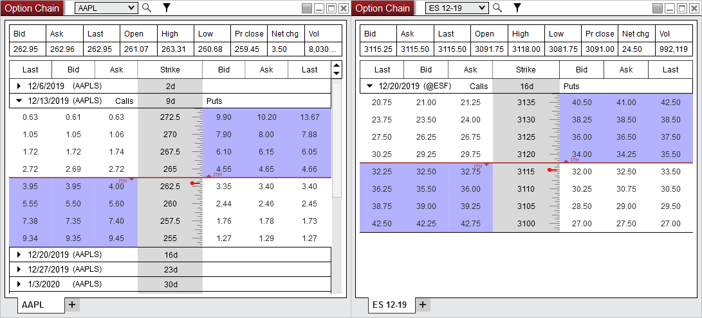

|
<< Click to Display Table of Contents >> 8.0.20.1 |


|
8.0.20.1
|
<< Click to Display Table of Contents >> 8.0.20.1 |
|
8.0.20.1 Release Date
December 23, 2019
Attention TD Ameritrade Users: •For TD Ameritrade uses there is a new connection process to authorize the username and password. To continue to connect you must update to NinjaTrader 8.0.20.0 or newer by December 31, 2019. See the link here for more information |
Issue# |
Status |
Category |
Comments |
14246 |
Fixed |
TD Ameritrade, Orders |
Session is now renewed every hour to ensure order submission works as expected |
8.0.20.0 Release Date
December 5, 2019
Features |
Added options support for Kinetick, IQFeed, and Interactive Brokers (beta) Kinetick, IQFeed, Interactive Brokers, Options Feature #13676
With Kinetick, IQFeed, and Interactive Brokers you can now access options on futures and equities. At this time these features are in beta.
 |
Major improvements on Portuguese translations and sound files Localization Feature #14185
Added improvements to Portuguese translations provide a more complete experience for Portuguese clients. |
Issue# |
Status |
Category |
Comments |
14083 |
Fixed |
Alerts |
Clicking an Alert Dialog box caused the box to move off screen |
14113 |
Fixed |
Alerts |
Alerts Log did not save column settings |
14014 |
Fixed |
Alerts, Chart |
Corrupt alert could prevent other alerts on the same chart from working |
14090 |
Fixed |
ATI |
CLOSESTRATEGY command did not close orders or position from Atm Strategy |
13981 |
Fixed |
ATM Strategies |
Target Chase activated without the target being touched |
14002 |
Done |
ATM Strategies |
Reverse at stop/target orders would get canceled on disconnect and get stuck on cancel submitted |
14129 |
Fixed |
ATM Strategies |
ATM strategy template was not saving when Chase if Touched was applied/taken off |
14164 |
Fixed |
ATM Strategies |
An ATM with 'MIT enabled for Profit' would submit the MIT target order with a stop price of zero if position was added to an active ATM strategy |
14135 |
Changed |
Backup & Restore |
Improved handling of references for backup/restore process |
14009 |
Fixed |
Chart |
Resolved a scenario where cross hair cursor icon was incorrect after restarting |
14045 |
Fixed |
Chart |
Dragging a data series from one chart to another did not keep bar width from originating chart |
14055 |
Fixed |
Chart |
X axis label was missing on minute chart with some scaling settings |
14073 |
Fixed |
Chart |
Resolved an error that could occur when the data box was saved off screen in a workspace |
14077 |
Fixed |
Chart |
'No time scroll' cross hair setting did not display associated hot key |
14133 |
Fixed |
Chart |
Chart templates would grow in size from saving information unrelated to the template |
14038 |
Fixed |
Chart, Window Linking, NinjaScript |
Duplicate in new window while using instrument link could lose track of panel index |
14062 |
Fixed |
Control Center |
Removing three DLLs which were applied to a chart would cause a crash |
14152 |
Fixed |
Control Center, Commissions |
Executions tab commission column did not honor account denomination property |
14027 |
Fixed |
Core |
Failed to process install file error now auto repairs so it should only occur once |
14123 |
Added |
CQG |
Added Open Interest with WebAPI |
14142 |
Fixed |
CQG |
WebAPI would not display real time index data |
14145 |
Fixed |
CQG |
Resolved a scenario where some WebAPI orders would be accepted at a different price |
14146 |
Fixed |
CQG |
WebAPI would not attempt to reconnect after a lost connection |
14018 |
Fixed |
Depth Chart |
Property presets were not applied at start-up |
14101 |
Fixed |
DrawingTool |
Resetting a drawing object template caused drawing object to disappear |
14125 |
Fixed |
DrawingTool |
Moving the ruler tool outside of chart boundaries resulted in a loop of errors |
14138 |
Fixed |
FXCM |
Resolved a scenario where connection loss could get stuck |
14081 |
Fixed |
Historical Data Window |
Some import errors did not display in the format expected |
14036 |
Fixed |
Hot Key, Market Watch |
Market Watch hot key was not listed under Global Hot Keys |
14102 |
Fixed |
Interactive Brokers |
Bars with a volume of zero would show with a volume of one |
14160 |
Fixed |
Interactive Brokers |
Resolved a scenario where orders would return to an incorrect contract month that does not exist |
14149 |
Fixed |
Interactive Brokers |
Orders submitted at an invalid forex prices did not throw order rejection/error |
13966 |
Fixed |
Interactive Brokers, NinjaScript |
Stop order was unexpectedly canceled when disabling a strategy |
14050 |
Fixed |
Interactive Brokers, Position Display |
VX futures positions did not show up on order entry position display |
14119 |
Fixed |
Licensing |
3rd Party Licensing incorrectly accepted user defined IDs with spaces |
14187 |
Fixed |
Licensing |
Vendor licensing filter by Name returned no results |
14115 |
Fixed |
Localization, Commissions |
Commissions Dialog Instrument Type was not localized |
13967 |
Fixed |
Market Analyzer |
Resolved a scenario where configured indicator name didn't update as expected |
14065 |
Fixed |
Market Analyzer |
Cross above/below cell conditions did not work as expected |
14127 |
Fixed |
Market Analyzer |
Bar graph percent did not properly span full column width |
14139 |
Fixed |
Market Analyzer |
Bar graph did not show negative values |
14140 |
Fixed |
Market Analyzer |
Bar graph tooltip value was not rounded |
14060 |
Fixed |
Market Analyzer, Indicator |
Correlation indicator produced error when applied |
13965 |
Fixed |
NinjaScript |
Resolved a scenario where canceling a stop order from a strategy resulted in an error |
14067 |
Fixed |
NinjaScript |
Switching tabs could lose cursor position |
14163 |
Fixed |
NinjaScript |
Resolved a scenario where a DLL included in a backup file did not get added to Bin/Custom on restore |
13969 |
Fixed |
NinjaScript |
Updated SampleOnOrderUpdate to track all execution and ensure the fills match before submitting stop market and limit orders |
14112 |
Fixed |
NinjaScript Editor |
Importing NinjaScript file will caused focus of NinjaScript tab to change |
14170 |
Fixed |
NinjaScript Editor |
Find window remained visible when changing workspaces |
13996 |
Fixed |
NinjaScript, ATM Strategies |
GetAtmStrategyRealizedProfitLoss sometimes reported 0 after AtmStrategyClose was used |
14053 |
Fixed |
NinjaScript, Chart |
Global draw objects placed by script plotted incorrectly on lower time frame charts |
13848 |
Fixed |
Option Chain |
'Loading...' could stay stuck after disconnect |
14097 |
Fixed |
Options Chain |
Middle ruler jumped around as new market data came in |
14084 |
Fixed |
Order Flow + |
Order Flow Volume Profile POC and Value Area lines extended outside of trading hours |
14104 |
Fixed |
Order Flow + |
Order Flow Volume Profile price profile could plot letters from outside of trading hours |
14105 |
Fixed |
Order Flow + |
Order Flow Volume Profile price boxes overlapped when profile alignment was set to right |
14108 |
Fixed |
Order Flow + |
Order Flow Volume Profile could cause chart to lag when 'Display mode' was set to 'Outline' |
14167 |
Fixed |
Order Flow + |
Order Flow Volume Profile composite profile trading hours property did not affect the profile |
14171 |
Fixed |
Order Flow + |
Order Flow Volume Profile Initial Balance accounted for 1 extra bar of data |
14192 |
Fixed |
Order Flow + |
Order Flow Volumetric bars did not apply gradient to statistic values in some scenarios |
14173 |
Fixed |
Performance |
Recent instruments could retain unnecessary information |
14012 |
Changed |
Performance, Chart |
Improved performance for 1440 minute charts |
14041 |
Fixed |
Performance, Chart |
Unchecking 'Equidistant bar spacing' could result in lag |
14054 |
Fixed |
Playback |
Start and End Dates did not save when disconnecting and reconnecting |
14068 |
Fixed |
Playback |
A multi-series strategy behaved differently if applied on the strategies tab vs a chart |
14103 |
Fixed |
Playback, NinjaScript |
ImmediatelySubmit was submitting duplicate orders in Playback |
14154 |
Fixed |
Playback, NinjaScript |
Strategy using CloseStrategy() caused a freeze |
14087 |
Fixed |
Playback, Strategy, Trade Performance |
Error occurred when viewing real-time trade performance in Playback |
14150 |
Fixed |
Position Display |
Submitting an order to an invalid instrument resulted in a crash |
14162 |
Fixed |
Stock Import |
Could not import stocks to create instruments with numbers |
13972 |
Fixed |
Strategy Analyzer |
Opening AI Generate Strategy Analyzer result in new Strategy Analyzer resulted in an error |
13976 |
Fixed |
Strategy Analyzer |
Parameters tool-tip in the Log showed the parameters for the wrong test |
13990 |
Fixed |
Strategy Analyzer |
Double clicking a Walk Forward result in the Log resulted in the Order, Execution, and Trades displays do not populating |
13998 |
Fixed |
Strategy Analyzer |
Performance value in Results grid did not match value in summary during optimization |
14032 |
Fixed |
Strategy Analyzer |
Backtests with a high order fill resolution of 1 tick resulted in an error |
14051 |
Fixed |
Strategy Analyzer |
Monte Carlo report for MaxConsecutiveWinners and MaxConsecutiveLosers were reversed |
14120 |
Fixed |
Strategy Analyzer |
Optimizer could get an error when running off historical data with some sets of data and settings |
14124 |
Fixed |
Strategy Analyzer |
Compiling reset some parameter settings |
14148 |
Fixed |
Strategy Analyzer |
Backtest with a commission template applied and 'Display' set to 'Percent' incorrectly formatted commission value after a restart |
14151 |
Fixed |
Strategy Analyzer |
Resetting strategy template then running a backtest changed parameter values after backtest |
14046 |
Fixed |
Strategy Builder |
Using an indicator as an input resulted in a compile error |
14143 |
Fixed |
Strategy Builder |
Order Flow + indicators were incorrectly available in the Strategy Builder |
14179 |
Fixed |
Strategy Builder |
User defined inputs would allow quotation marks when it should not |
14181 |
Fixed |
Strategy Builder |
Creating an action which sets custom series to its value 1 bar ago would change after a restart and reopening of the strategy in Strategy Builder |
14166 |
Fixed |
Strategy Builder |
Using system indicator names for user inputs was incorrectly allowed |
14147 |
Fixed |
Strategy, Chart |
Unchecking enabled on a strategy applied to chart, then removing the strategy without OK/Apply caused chart to retain strategy |
14080 |
Fixed |
SuperDOM |
Dynamic SuperDOM could not select ATM drop down reliably |
14121 |
Fixed |
SuperDOM |
Resolved a scenario where there could be a bars ago error when loading an indicator |
14033 |
Fixed |
SuperDOM, NinjaScript |
Indicator that adds a daily series would not load |
14111 |
Fixed |
SuperDOM, Window Linking |
Window linking passed through to other workspaces when 'Global link button across workspaces' was disabled |
14064 |
Fixed |
Tick Replay, Strategy |
Enabling a strategy with Tick Replay after a restart resulted in a crash |
14093 |
Fixed |
Tick Replay, Bars |
Resolved a scenario where some scripts saved in a workspace with Tick Replay resulted in an error |
14074 |
Fixed |
Workspaces |
DataBox was left off screen when opening workspace and clicking yes to move windows to primary monitor |